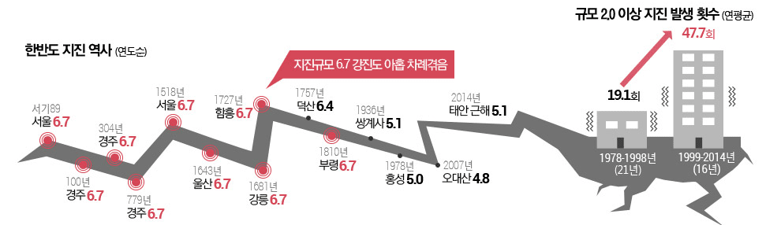

지진상식
지진 발생원인
지진은 어떻게 발생하나요?
- 판구조론(Plate Tectonics Theory)
- 지구의 표면은 여러 개의 조각판으로 구분된다. 이 판들이 수평으로 이동할 때 판 경계에서 발생하는 에너지가 방출되는데 이것이 지진발생 원인이 된다. 판구조론은 지진 발생원인을 밝히는 대표적인 이론으로 알려져 있다.

<지각판의 분포와 운동방향 (이미지 출처: 두산백과)>
- 탄성반발설(Elastic Rebound Theory)
- 지각에 변형이 발생하며 탄성에너지를 축적하다 순간적으로 파괴되어 에너지의 방출이 일어나면서 지진이 발생한다는 학설입니다.

<탄성 반발설 (이미지 출처: 9.12 지진백서)>
우리나라는 지진 안전지대 인가요?
한반도는 불의 고리에서 벗어나 유라시아판에 위치하고 있어 비교적 안전한 편이지만, 중국의 강진 사례나 조선시대 역사 기록에 비춰볼 때 강진 가능성도 완전히 배재할 수 없다고 전문가들은 진단하고 있다. 특히, 1978~1899년까지의 연 평균 지진 발생 횟수는 19.2회였으나, 2000년 이후 연 평균 47.8회로 약 2.5배 급증한 것이 주목할만한 사항으로 우리나라의 내진 기준을 높이고 시공, 감독을 강화하는 등 재앙이 닥치기 전에 대비하는 자세가 필요하다고 지적하고 있다. (출처: 조선닷컴 더스토리)

<우리나라 지진 발생 추이 (이미지 출처 : 조선닷컴 더스토리)>